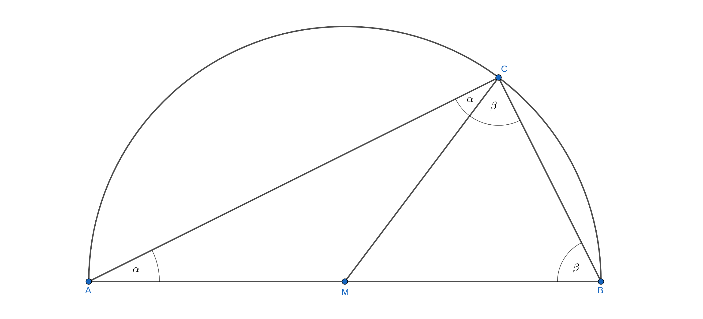
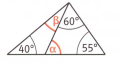

2.2 Geometrie
Aufgabe 1 - Der Satz von Thales
Folgende Geogebra-Anwendung bietet eine Veranschaulichung einer geometrischen Gesetzmäßigkeit, die nach Thales benannt ist, der im 6. Jahrhundert v. Chr. in Milet lebte. Sie wird ihm zu Ehren als der Satz von Thales bezeichnet. Solltest du mehr über Thales von Milet wissen wollen, kannst du zum Beispiel hier nachlesen.
Bewege den Punkt C mit der Maus und versuche eine Vermutung aufzustellen, was Thales vor etwa 2600 Jahren herausfand.
Überprüfe deine Vermutung anhand verschiedener Dreiecke. Bewege dazu auch die Punkte A und B, um neue Dreiecke zu erzeugen.
Formuliere den Satz des Thales in der Wenn-Dann-Form.
Wenn C ein Punkt auf dem Halbkreis über der Strecke \(\overline{AB}\) ist, dann hat das Dreieck ABC bei C einen rechten Winkel
Im Folgenden geht es nun darum, den Satz des Thales zu beweisen. Das darfst du gerne erst einmal ganz alleine und selbst versuchen. Solltest du an der ein oder anderen Stelle nicht weiterkommen, gibt es hier Tipps.
Er soll gewusst haben, dass ein Kreis durch jeden Durchmesser in zwei gleiche Teile geteilt wird.
Ihm war bekannt, dass ein gleichschenkliges Dreieck zwei gleich große Basiswinkel hat.
Er wusste, dass die Winkelsumme im Dreieck 180° beträgt.
Mache dir eine Skizze des Dreiecks mit dem Thaleskreis, ohne jedoch den rechten Winkel bei C als solchen zu kennzeichnen. Zeichne auch die Strecke \(\overline{MC}\) ein. So entstehen die beiden Dreiecke AMC und BCM.
Überlege und notiere: Welche Besonderheiten weisen sie auf?
Mache dir klar, warum die beiden Dreiecke AMC und BCM jeweils zwei gleich große Winkel haben.
Denk daran: Der Radius des Kreises ist überall gleich lang!
Bezeichne die Winkel der Dreiecke AMC und BCM mit griechischen Buchstaben, wobei gleich weite Winkel gleiche Buchstaben erhalten sollen. Stelle anschließend die Gleichung für die Winkelsumme des Dreiecks ABC auf.
Durch Umformen der Gleichung erhältst du nun den gesuchten Satz.
- Schreibe den Beweis des Satzes von Thales übersichtlich auf. Wo greifst du in die Trickkiste? Was folgt dann Schritt für Schritt?
Zunächst zeichnet man die Strecke \(\overline{MC}\) als Hilfslinie ein (Trickkiste!). Auf diese Weise zerlegt man das Dreieck ABC in zwei kleinere Dreiecke: das Dreieck AMC und das Dreieck MBC.
Die Dreiecke AMC und MBC sind beide gleichschenklig: Die Strecken \(\overline{AM}\), \(\overline{MC}\) und \(\overline{MB}\) sind alle gleich lang. Ihre Länge entspricht dem Radius des Kreises.
Da die Dreiecke AMC und MBC gleichschenklig sind, haben sie auch zwei gleich weite Basiswinkel. Notiert man das alles in einer Skizze, sieht diese wie folgt aus:

Wie du weißt, beträgt die Winkelsumme im Dreieck 180°.
Damit gilt im Dreieck ABC also: \(2 \alpha + 2 \beta = 180°\)
Dividiert man nun noch beide Seiten der Gleichung durch 2, ergibt sich \(\alpha + \beta = 90°\). Damit ist der Satz des Thales bewiesen.
Aufgabe 2
Experimentiere mit der folgenden Geogebra-Anwendung. Du kannst den Winkel \(\phi\) verändern, den Punkt A bewegen und dir die Größe des Umfangs- und des Mittelpunktwinkels anzeigen lassen..
Formuliere einen mathematischen Satz, der den von dir vermuteten Sachverhalt beschreibt.
Prüfe, ob deine Vermutung auch dann gilt, wenn M auf einer Dreieckseite oder außerhalb des Dreiecks liegt. Präzisiere (gegebenenfalls) deinen Satz.
Im Folgenden geht es nun wieder darum, den aufgestellten Satz zu beweisen. Das darfst du gerne erst einmal ganz alleine und selbst versuchen. Solltest du an der ein oder anderen Stelle nicht weiterkommen, gibt es hier Tipps.
Zeichne die Ausgangsfigur:
Schlage einen Kreis mit Radius \(r=5\;cm\) um den Mittelpunkt \(M\)
Markiere auf der Kreislinie zwei Punkte \(P_1\) und \(P_2\), so dass M nicht auf \(\overline{P_1P_2}\) liegt und zeichne das Dreieck \(P_1P_2M\).
Wähle nun einen Punkt A auf der Kreislinie so, dass M im Inneren des Dreiecks \(P_2P_1A\) liegt und zeichne das Dreieck \(P_2P_1A\).
Zeichne die Strecke \(\overline{MA}\) ein. So entstehen die beiden Dreiecke \(MP_1A\) und \(AP_2M\). Überlege welche Besonderheiten die Dreiecke aufweisen.
Denk daran: Der Radius des Kreises ist überall gleich lang!
Bezeichne die Basiswinkel der Dreiecke \(P_2P_1M\), \(AP_2M\) und \(AMP_1\) mit den griechischen Buchstaben \(\alpha\), \(\beta\) und \(\gamma\), wobei gleich weite Winkel gleiche Buchstaben erhalten sollen.
Bezeichne weiterhin den Mittelpunktswinkel mit \(\delta\) und den Umfangswinkel mit \(\epsilon\).
Notiere, als welche Summe sich \(\epsilon\) schreiben lässt.
Die Summe der drei Innenwinkel bei M beträgt 360°, demnach gilt also:
\(\delta + (180°-2 \cdot \ldots) + (180°- 2 \cdot \ldots) = 360°\)
Ergänze obige Gleichung durch die bei dir passenden Winkel. Fasse anschließend zusammen und forme um. Auf diese Weise erhältst du den gesuchten Satz.
- Schreibe den Beweis des Satzes übersichtlich auf. Wo greifst du in die Trickkiste? Was folgt dann Schritt für Schritt?
Aufgabe 3
Auf einem Kreis liegen die Eckpunkte eines Vierecks so, dass eine Diagonale des Vierecks durch den Mittelpunkt des Kreises geht.
Skizziere den beschriebenen Sachverhalt.
Welche speziellen Eigenschaften hat das Viereck?
Formuliere einen mathematischen Satz und beweise ihn. Natürlich darfst du im Beweis auf bereits bewiesene Sätze verweisen.
Aufgabe 4
Bestimme die fehlenden Winkel.
